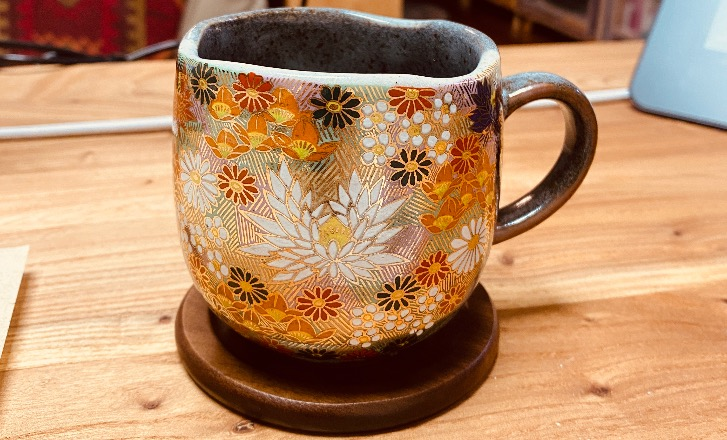

博客研究中

19.3.2024
最近一直在到处玩， 天气时不时下雨，雨天不会出门，这是我的个人习惯，除非真的有能让我除非的事情。 很遗憾，并没有。
但是即便下雨, 我也有很多自己给自己安排的事情，这不——妞妞以及妞妞之家的家庭气氛的营造，就单是这些方面，就已经给我安排的妥妥的。
我是一个追求简约生活的人，正因如此，我也逐渐产生了去繁化简的天赋。
我在研究怎么样把自己的网站搭建起来。老公确实是it，但是他并不是前端开发，跟他没关系，确实如此。
再说了，就算跟他有关系，我也不能为难他，如果他又会又不想搞，这也是人家的权利，无可厚非。当然了，这也是我做人的原则和良知。
看看，高尚如妞妞之主，哈哈哈。
我说我想搞却不知如何搞，老公说，那就说明你还没有那么想搞。
他说的真对，就冲他这句话，我居然一个人搞起来了。
我也不知道有没有搞起来，现在姑且算是。 看来有时候对自己要求低一点反而更有自信。